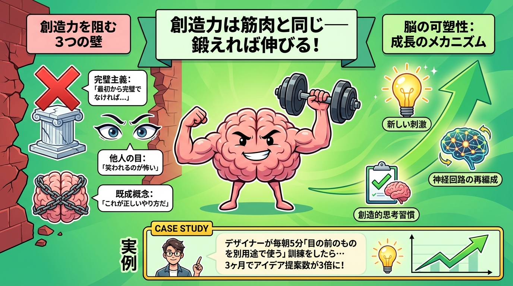
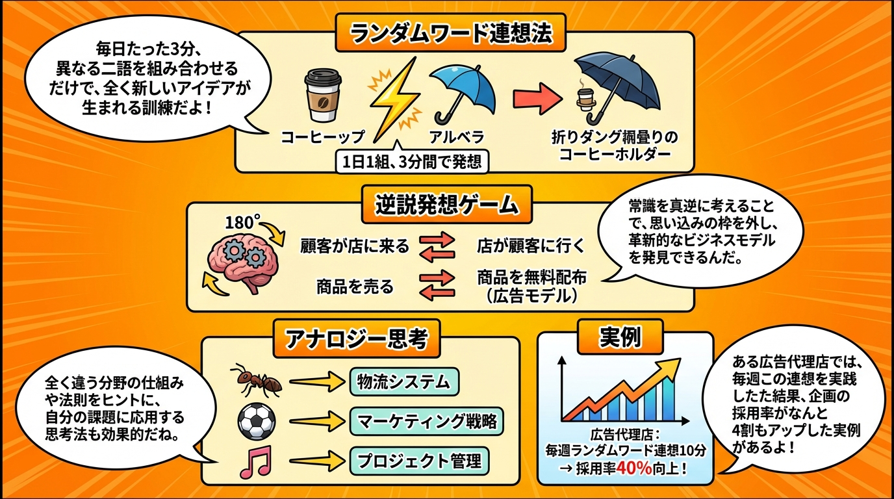
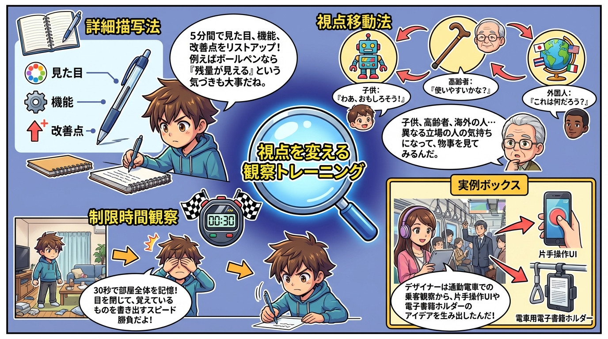
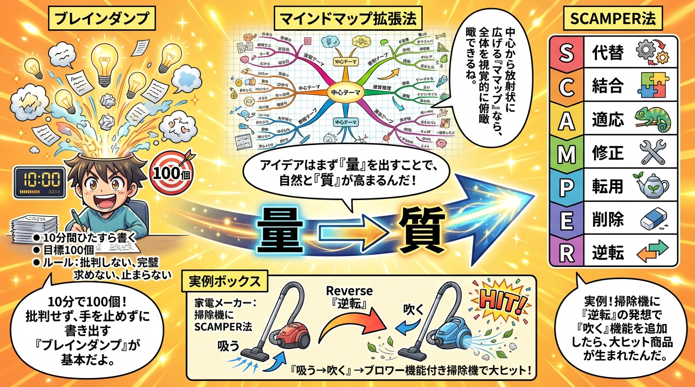
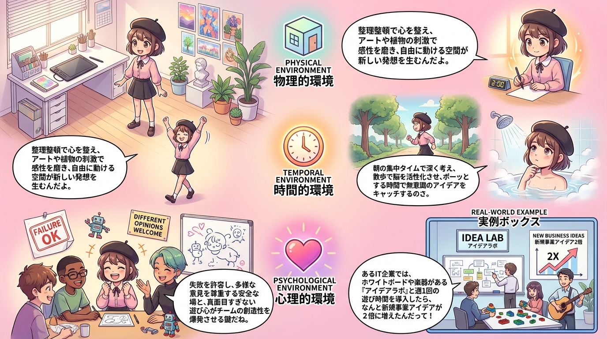

📚 学習漫画で理解する
第1章：創造力は筋肉と同じ—鍛えれば伸びる

創造力は生まれつきの才能ではなく、毎日のトレーニングで強化できる思考の習慣です。脳の可塑性により、新しい刺激を受けることで神経回路が再編成されます。
創造力を阻む3つの壁は、完璧主義、他人の目、既成概念です。これらを克服することで、誰でも創造的に考えられるようになります。
第2章：連想力を鍛える3つのエクササイズ

ランダムワード連想法では、無関係な2つの単語を組み合わせて新しいアイデアを生み出します。逆説発想ゲームで常識を逆転させ、アナロジー思考で異分野から学びます。
第3章：視点を変える観察トレーニング

詳細描写法で5分間対象を観察し、視点移動法で子供・高齢者・海外の人など異なる立場から見ます。制限時間観察で普段見過ごしているものに気づく訓練をします。
第4章：アイデア量産の技法

ブレインダンプで10分間100個のアイデアを出し、マインドマップで視覚的に連想を広げます。SCAMPER法の7つの視点（代替・結合・適応・修正・転用・削除・逆転）で既存のものを改良します。
第5章：創造的環境の作り方

物理的環境（整理整頓・刺激の多様性・可動性）、時間的環境（集中タイム・散歩タイム・ボーッとする時間）、心理的環境（失敗許容・多様性尊重・遊び心）を整えます。
第6章：創造力を日常化する習慣
モーニングページ（起床後ノート3ページ手書き）、アイデアスナック（ランチ後10分の「もし〜だったら？」思考）、1日1学び（寝る前に気づきを記録）の3つの習慣で創造力を日常化します。
💡 重要ポイント
- 創造力は筋肉と同じで訓練すれば誰でも伸ばせる
- ランダムワード連想・逆説発想・アナロジー思考で連想力を鍛える
- 詳細描写・視点移動・制限時間観察で観察力を高める
- 毎日5分の習慣（モーニングページ、アイデアスナック、1日1学び）で創造力を日常化